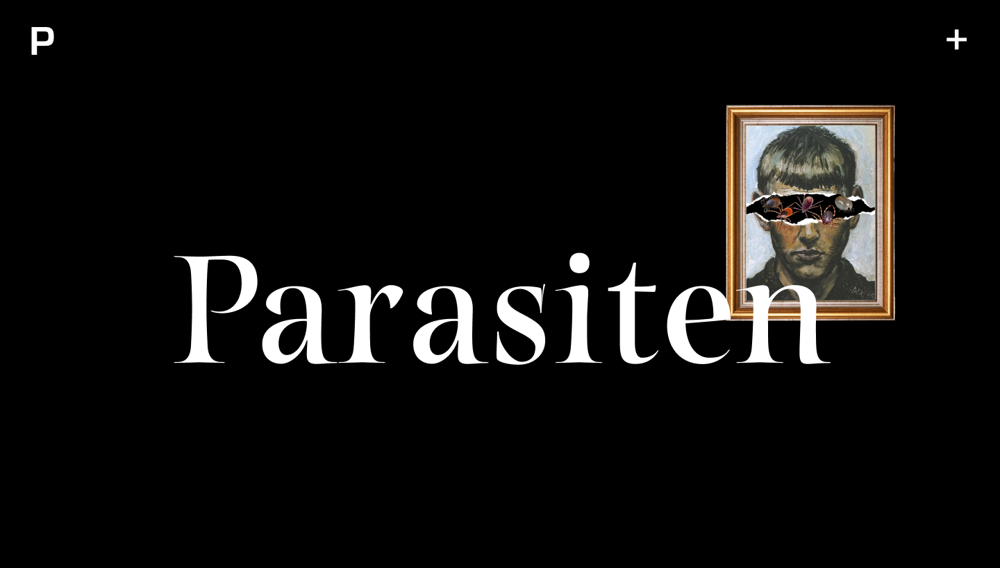
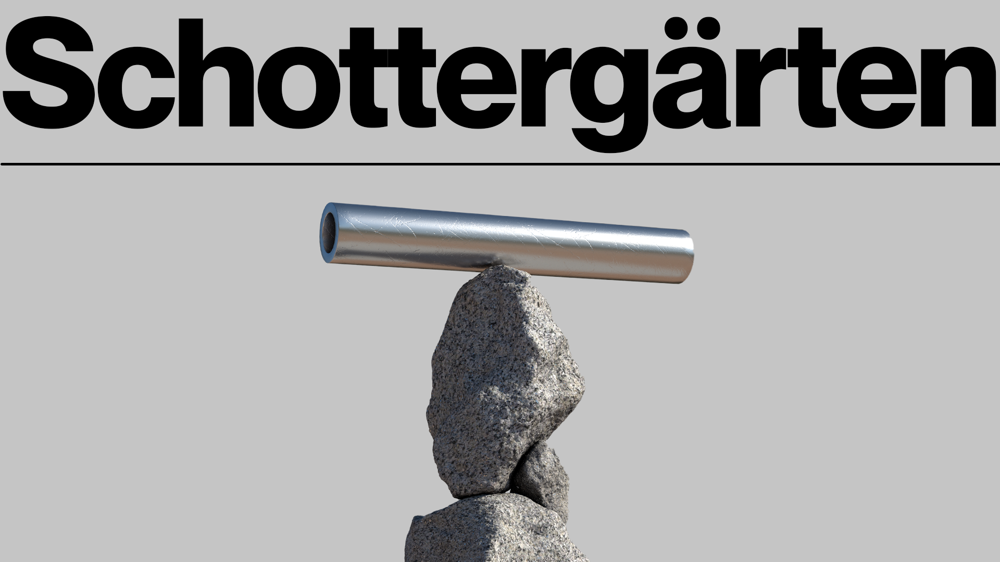
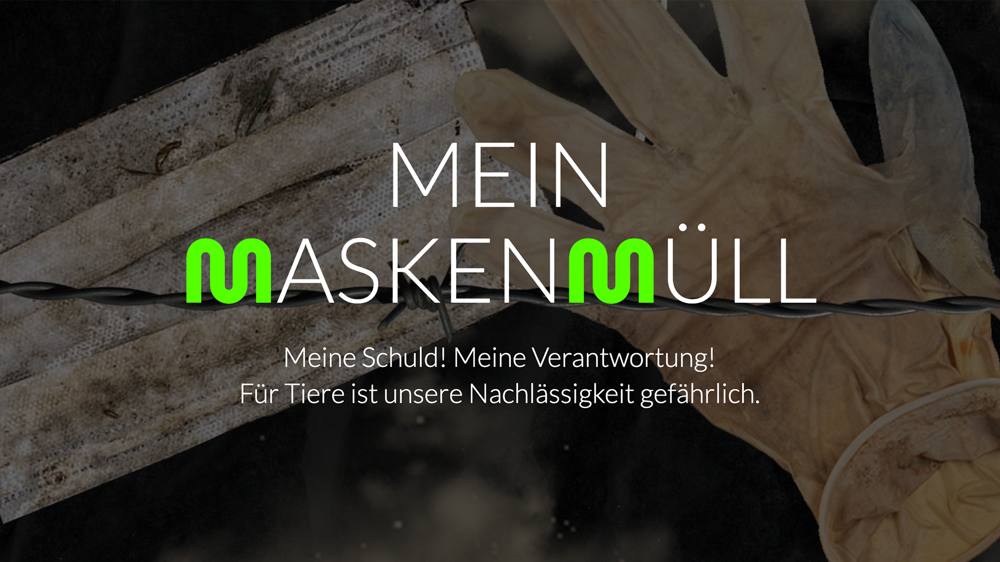
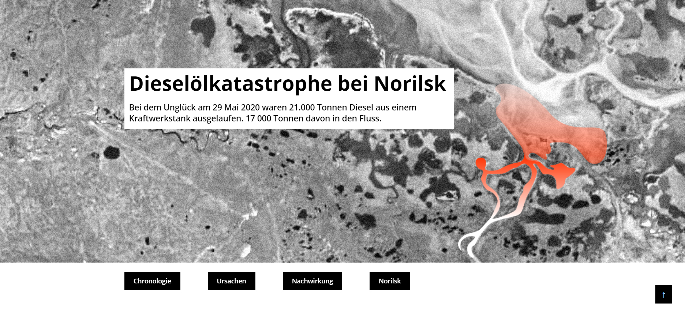
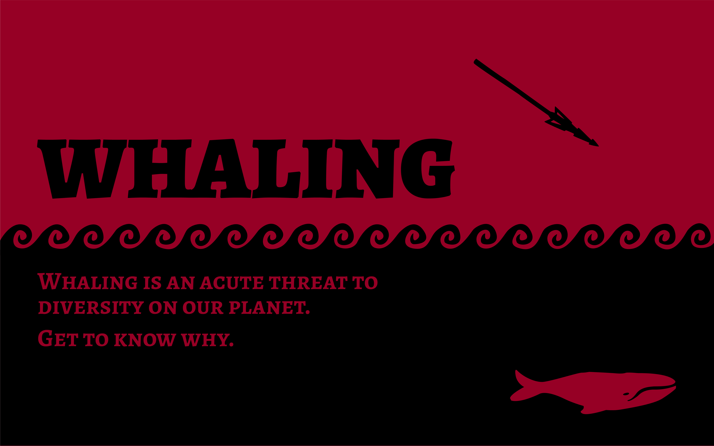
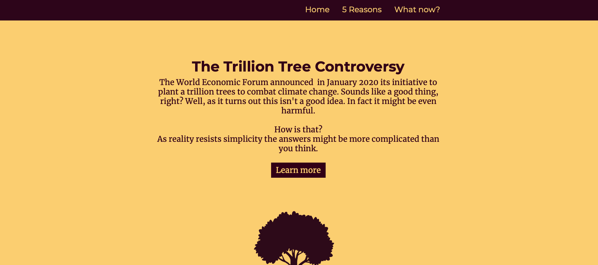
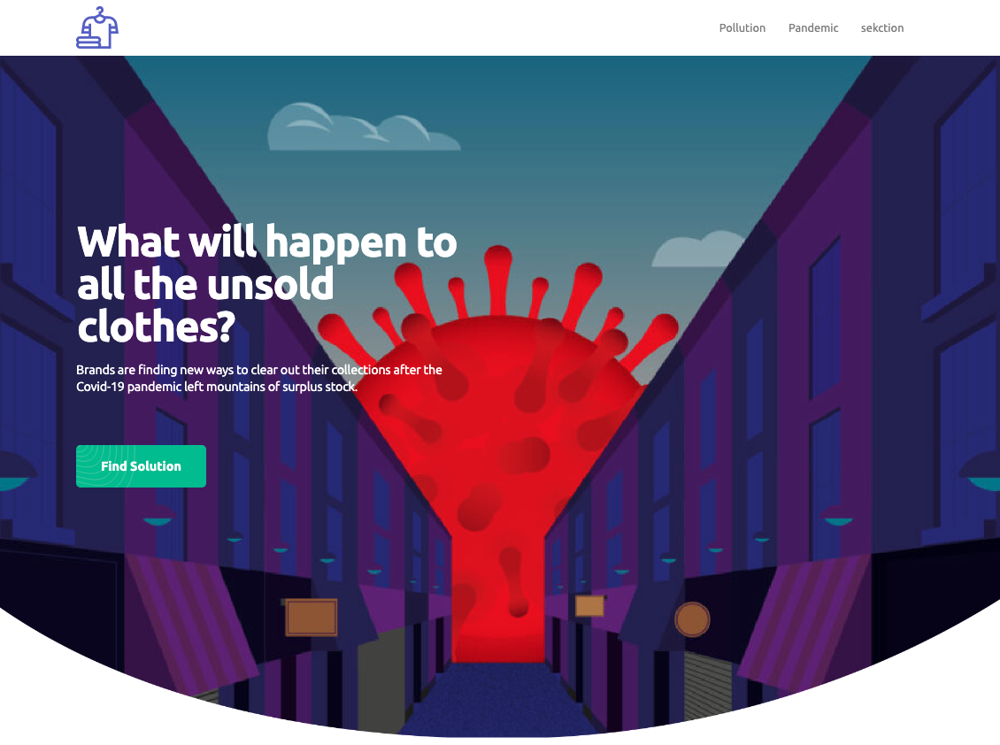

Projekte

Ökologische Missstände von Geburt an
by Alina Smidt

Parasiten
by India Janke

Oil spill & its effects (Gulf of Mexico)
by Caroline Gräfin Strachwitz

Schottergärten
by Linda Maas

Mein Maskenmüll
by Katharina Vögtle

Dieselölkatastrophe bei Norilsk
by Maria Lavrentieva

Whaling
by Kolja Walden

Das Eschen Sterben
by Renée Klöffer

Kampf gegen den Sand
by Zhefan Gu

Sandräuber
by Tina Thalmann

Katze auf der Flucht
by Lu Li

Kiribati - Untergang eines Inselstaates
by Sophie Boll

The Trillion Tree Controversy
by Davi Saavedra Gerhardt

no Tannenbaum
by Senya Novosel-Pejovski

What will happen to all the unsold clothes?
by Yucheng Wang